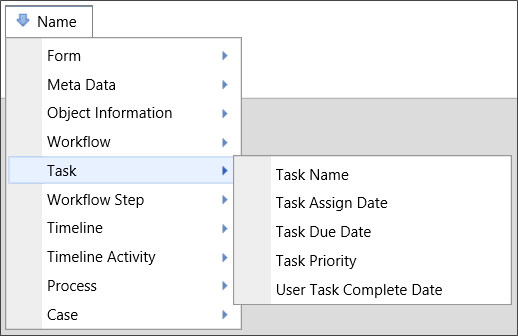

Returns
This system variable returns a Boolean value reflecting whether or not the currently logged in user is opening the Form in the context of a running task.

This system variable returns a Boolean value reflecting whether or not the currently logged in user is opening the Form in the context of a running task.
This system variable returns the number of tasks assigned to a user. If used without the optional parameters, e.g., {NUM_TASKS}, it will return all tasks assigned to the current user. Optional parameters enable you to specify specific task attributes or specify users other than the current user.
{NUM_TASKS, type=all|early|late, due_days=N|-N, user=USERID, assigned_days_ago=N|0}
due_days: This is a numeric parameter. If it is a positive number, it will be treated as the number of days until the task is due, which will return all tasks that are within the specified number of days of being due. If the parameter is a negative number, it will return all tasks that are at least the specified number of days past due.
type: The type of task assigned to the user, the available options are "all" to count all tasks, "early" to count tasks that aren't yet due, and "late" to count past due tasks.
assigned_days_ago: This is a numeric parameter. This parameter limits the number of tasks only to those assigned X days ago. Setting this value to 0 returns only those tasks assigned today.
user: The UserID of the user for whom you wish to return the number of tasks.
This system variable returns the number of tasks completed by a user. If used without the optional parameters, e.g., type, it will return all tasks completed by the current user. Optional parameters enable you to specify specific task attributes or specify users other than the current user.
{NUM_TASKS_COMPLETED, type=all|early|late, completed_days_ago=N|0, user=UserID}
type: The type of task assigned to the user, the available options are all to count all tasks, early to count tasks that aren't yet due, and late to count past due tasks.
completed_days_ago: This is a numeric parameter. This parameter limits the number of tasks only to those assigned X days ago. Setting this value to 0 returns only those tasks completed today.
user: The UserID of the user for whom you wish to return the number of tasks.

This system variable returns the name of the sub task automatically created when a user is assigned a task in a sequence.

This system variable returns the date the current task was assigned.
This system variable’s result can be formatted using the Modifiers that are generally available for Datetime system variables.

This system variable returns the date the current task is due.
UserTask=1: This optional modifier, when included in the variable, will return only dates for user task types.
This system variable’s result can be formatted using the Modifiers that are generally available for Datetime system variables.

This system variable returns a string containing the instructions for the current task. The results of this system variable can be displayed on a Form to instruct the end user.

The Task Name system variable returns the name of the task that the process is currently on. A user might use this system variable to configure a Form specifically to what task is running.

This system variable returns information about the user who delegated this task to another user. This system variable only returns a value when the task has been delegated.
This system variable’s result can be formatted using the Modifiers that are generally available for User system variables.

This system variable returns the priority of the current task.

This system variable returns the result of the specified task.
This system variable returns the amount of time elapsed for the currently running task.
This system variable’s result can be formatted using the Modifiers that are generally available for TimeSpan system variables.

This system variable returns the amount of time until the current task is due.
This system variable’s result can be formatted using the Modifiers that are generally available for TimeSpan system variables.
This system variable returns the user who is listed as a delegate for shared tasks through the Shared Delegation functionality.
This system variable returns a Boolean value that indicates whether the task is still waiting for acceptance. This variable is only useful in the context of a task that is assigned to the first user to accept the task.
Boolean: True if the task is still awaiting acceptance, and False if the task has been accepted by a user.
This system variable returns a list of tasks that were completed on a specified date, or in a specified date range. It is used only in filter conditions for a Knowledge View. The time specified can be a date, a month number, a month name, or a year. The system will use the closest "year" when a month value is used, e.g., a specified value of "7" or "July" will return all tasks completed in July of the current year.

Date: The date the task was completed by the user.
This variable doesn't have a text representation.